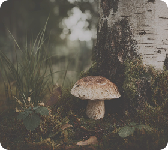
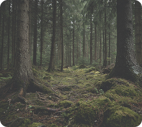
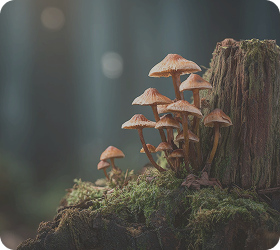

Биотопы
Где растут разные грибы
Как искать грибы в лесу
Грибы не растут случайно — они появляются в определённых условиях. Влажность, тип почвы и деревья вокруг напрямую влияют на то, какие виды можно найти.
Если понимать, где именно искать, сбор становится проще и предсказуемее. Важно не просто смотреть под ноги, а учитывать влажность, почву и деревья вокруг.
Главное — обращать внимание на сочетание факторов, а не на отдельные признаки.
Как грибы связаны с лесом
Многие грибы растут рядом с определёнными деревьями. Это связано с их корневой системой. Одни виды чаще встречаются рядом с берёзами, другие — в хвойных или смешанных лесах.



Эти типы леса помогают понять, какие грибы можно найти.
Наиболее опасные места во время грозы
Грибы чаще всего появляются во влажных участках леса, где сохраняется стабильная среда. Мох, тень и мягкая почва создают оптимальные условия для роста.
Опушки и светлые зоны тоже подходят — там достаточно света и влаги, особенно после дождя.
В сухих и открытых местах грибы встречаются реже, потому что почва быстрее теряет влагу.
Когда грибов больше всего
После дождя условия становятся наиболее благоприятными: почва насыщается влагой, и грибы начинают активно появляться.
Тёплая и влажная погода — лучший период для поиска. В засушливое время грибов значительно меньше.
Даже в одном и том же месте количество грибов может меняться в зависимости от погоды.
Где чаще всего находят грибы
40%
Влажный лес
с мхом
30%
Смешанные
участки
20%
Тенистые
зоны
10%
Открытая поляна
Чем стабильнее влажность, тем выше шанс найти грибы.
Простые правила поиска
1. Ищи грибы в местах с мягкой почвой и тенью — там они появляются чаще всего.
2. Обращай внимание на деревья вокруг — это помогает понять, какие виды могут расти поблизости.
3. Не стоит разрушать грибницу — аккуратный сбор помогает сохранить место для будущих находок.
Не все грибы безопасны. Даже похожие виды могут сильно отличаться. Если есть сомнения — лучше не брать гриб.
Спокойствие и наблюдение
Поиск грибов — это про внимание. Чем спокойнее ты двигаешься, тем больше замечаешь. Со временем лес становится понятнее, а сбор — более осознанным и безопасным.